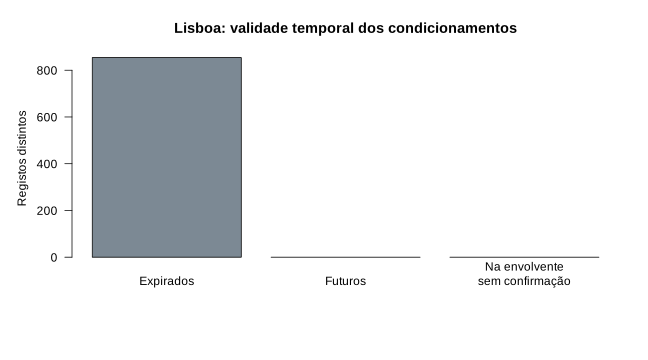
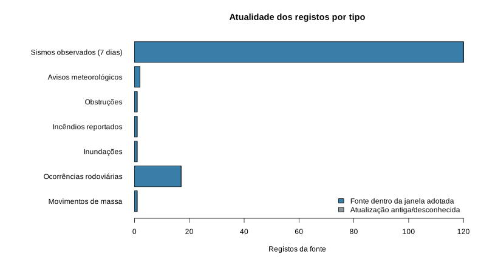

Capacidades e limites dos cinco módulos
Consultar trânsito em direto. O visualizador Waze/IP é independente desta análise: não foram extraídas velocidades ou ocorrências desses mapas.
Análise executada em R em 2026-10-28 21:44:15 UTC. Fonte: Câmara Municipal de Lisboa, CC BY 4.0.

Uma envolvente de datas pode incluir vários períodos diários. Não demonstra um corte contínuo. A data da recolha não comprova atualização da fonte. Nenhum registo é aqui confirmado como corte atual.
Contagens limitadas ao município de Lisboa, sem extrapolação nacional, sem velocidades ou tempos de viagem. Duplicados idênticos são removidos; IDs com conteúdo contraditório são excluídos e contabilizados em quality.json.
Artigo e método · Versão R · Tabela
Este quadro descreve o snapshot recolhido para análise. A aplicação consulta as fontes diretamente de cinco em cinco minutos e pode mostrar dados mais recentes.
| Fonte | Recolha | Registos | Dentro da janela | Antigos/desconhecidos |
|---|---|---|---|---|
| sifor | ok | 16 | 16 | 0 |
| ipma | ok | 2 | 2 | 0 |
| emsc | ok | 118 | 118 | 0 |

Para SIFOR, a janela exploratória é de uma hora desde DataDosDados e desde a recolha. Fonte recente não garante posição precisa ou dano. Os sismos são observações dos últimos sete dias na área alargada de Portugal, Atlântico e Ibéria; não são eventos em curso nem cortes. IPMA inclui apenas avisos não verdes em validade.
A vista Hazards nas vias representa rede viária e hazards; o trânsito Waze/IP permanece num modo alternativo, pois o iframe não aceita camadas próprias. A consulta opcional OpenFreeMap/OpenStreetMap permite assinalar segmentos a até 500 m de ocorrências pontuais atuais com linha laranja tracejada: possível condicionamento, por confirmar. A triagem adicional mede distâncias entre um ponto escolhido e ocorrências. Raios de 500 m, 1 km e 2 km são exploratórios, sem calibração de dano ou validação de rotas. Não se calculam quilómetros de estrada afetada, nem se infere corte por proximidade, sismo ou aviso distrital. A confirmação permanece na autoridade ou operador.
Fonte: ©SIFOR / ANEPC (agregados, utilização não comercial), IPMA, I.P. (com atribuição) e EMSC-CSEM (CC BY 4.0). As posições SIFOR são consultadas na origem pelo navegador e não republicadas no arquivo Git. A geolocalização do utilizador não integra este relatório.